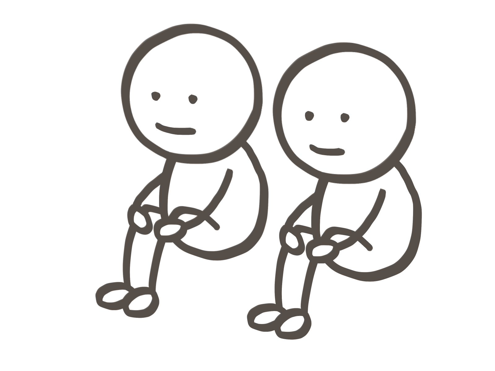
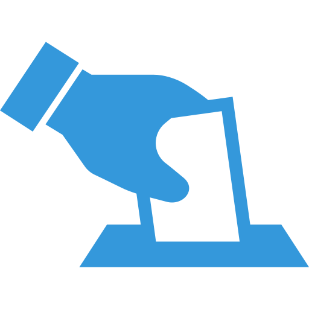
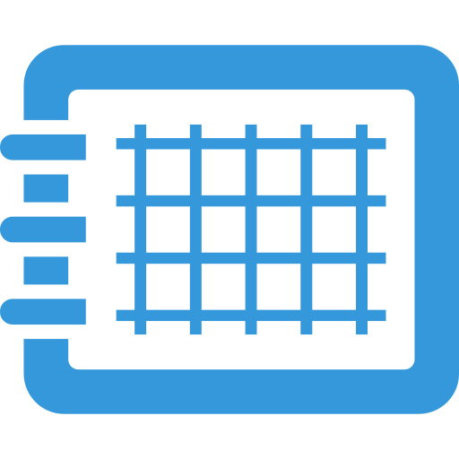
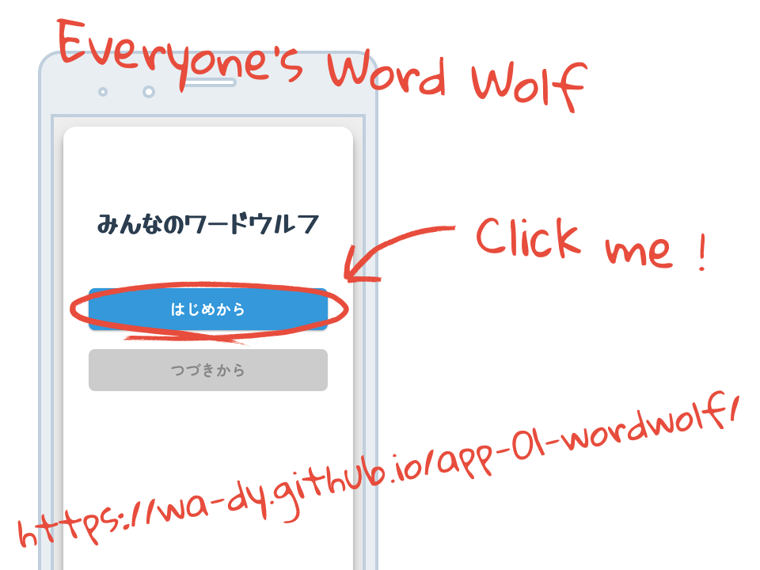
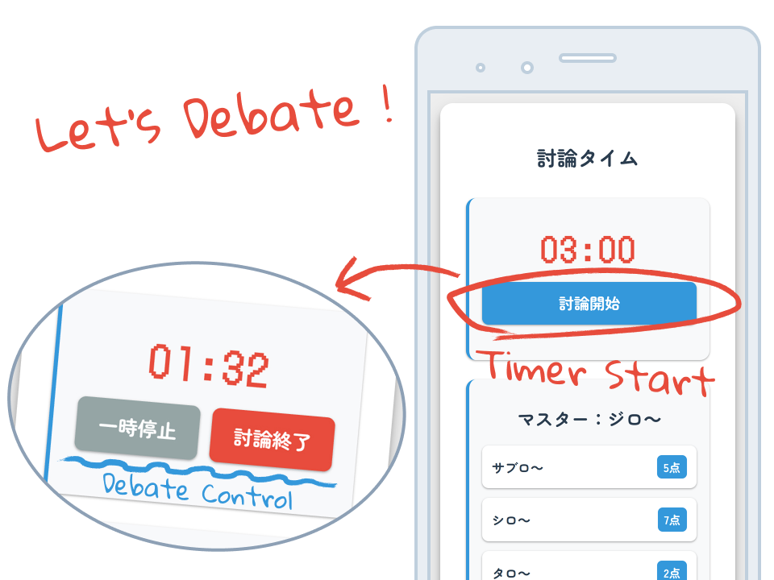
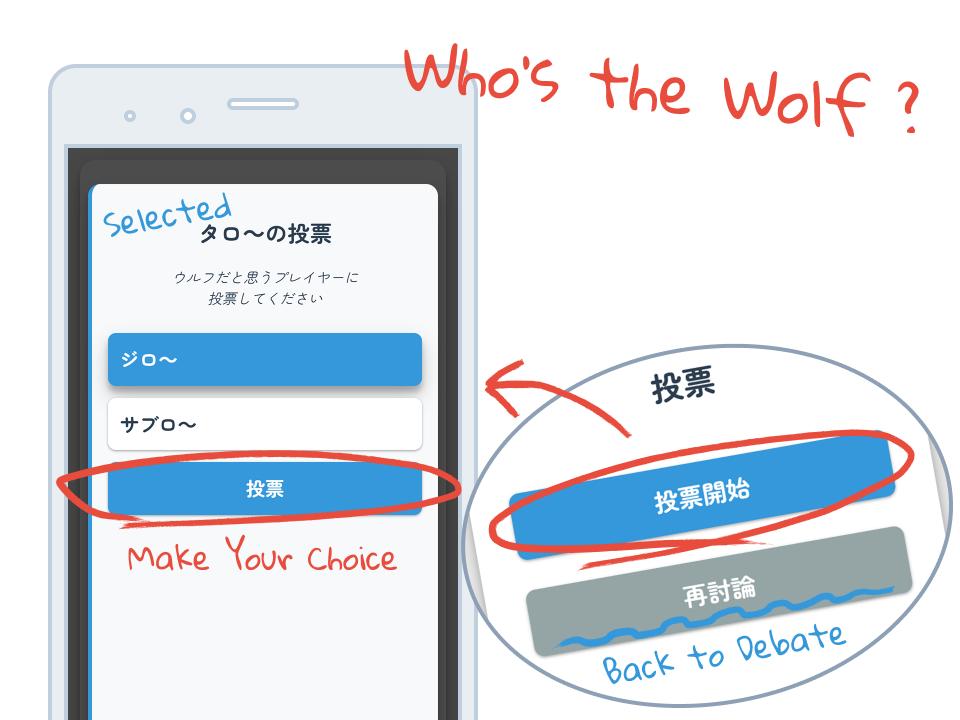
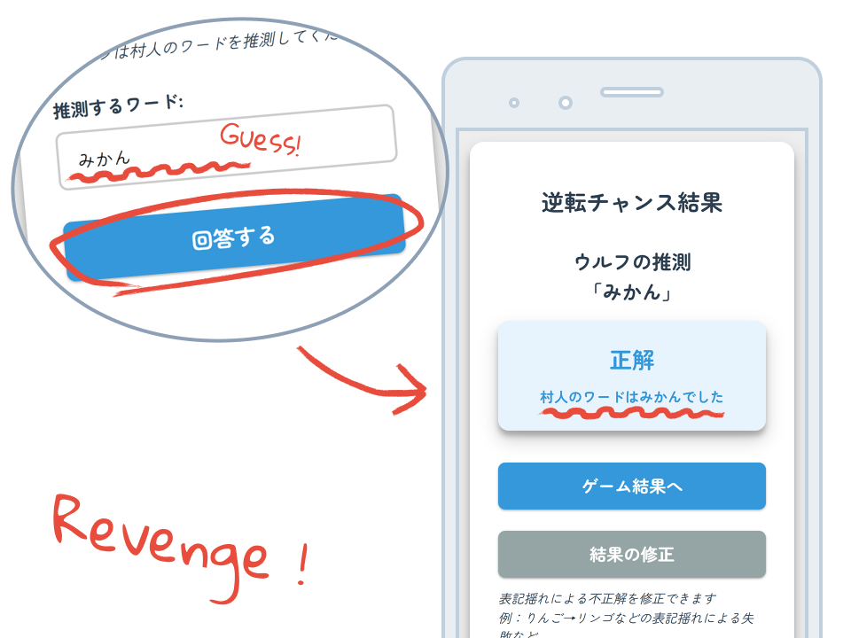
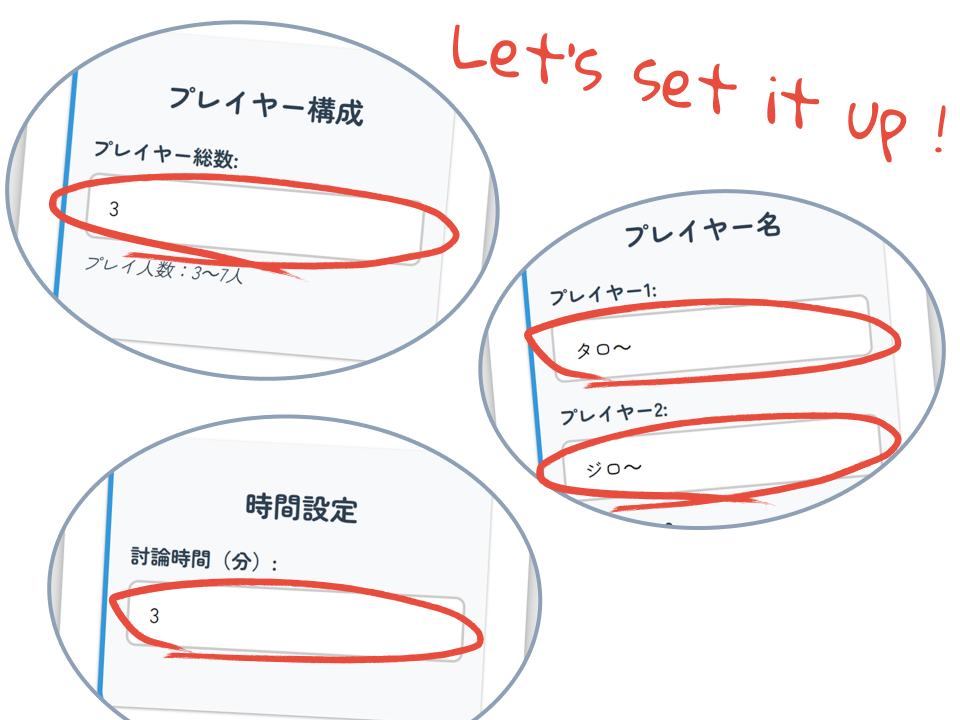
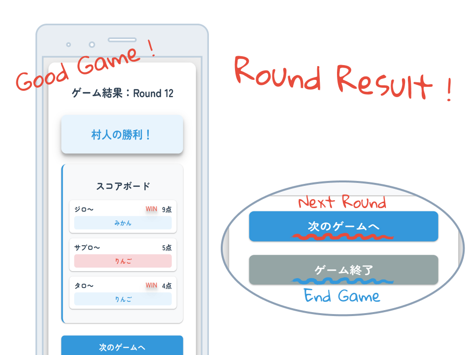
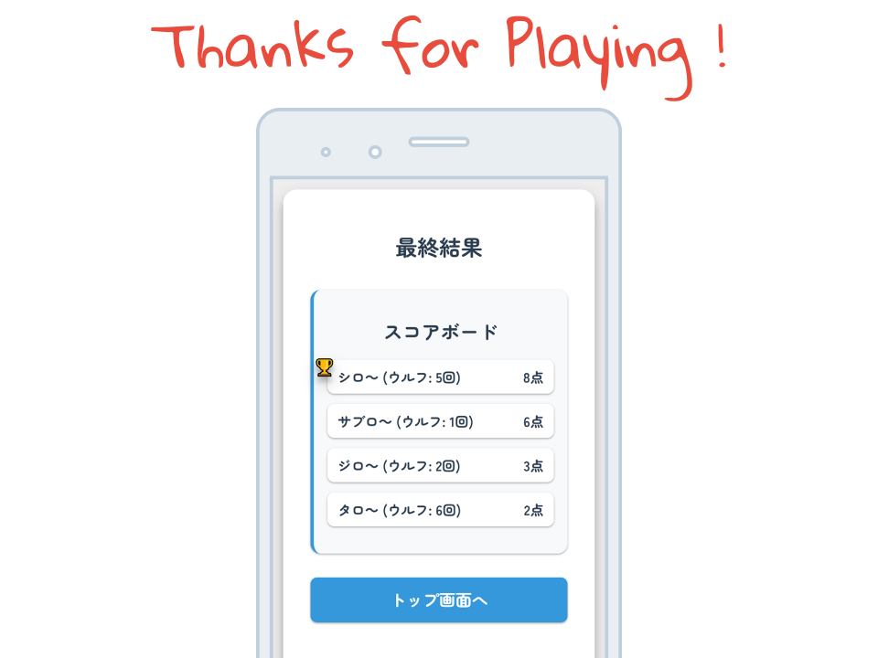

みんなのワードウルフ
話して笑って、裏切られる！会話型推理ゲーム


こんな時ありませんか？
-

仲間と盛り上がりたい時！
-

いまの遊びから、
ちょっと気分を変えたい時！ -

ちょっとした空き時間を
楽しく埋めたい時！
そんな時は
みんなのワードウルフ！
完全無料！登録不要！
スマホ１台で誰でもすぐに遊べます！
お題を見て、話して、見破れ 騙せ
みんなで遊ぶそもそもワードウルフって？
ワードウルフは、みんなで話して盛り上がりながら遊ぶ会話型の推理ゲームです。
参加者の中でひとりだけ、少しだけ違うお題を与えられた人（ウルフ）がいます。
全員で自由にトークをしながら、「誰がウルフなのか？」を探り合います。
ウルフは正体を隠しきれば勝ち、他のみんなは見抜ければ勝ち！
盛り上がり必至のパーティーゲームです。
そんなワードウルフを
このアプリならスマホ１台で
簡単に楽しめる！
みんなのワードウルフの特徴
-
完全無料で楽しめる！
登録も課金も一切なし。誰でも気軽にワードウルフを始められます！
-
インストール不要ですぐ遊べる！
ブラウザを開くだけでOK。アプリを入れる手間なく、思い立った瞬間にプレイ可能！
-
選べる2つの遊び方！

自動お題モードでサクッと遊ぶもよし、手動お題モードでオリジナルお題を楽しむもよし！自由にモードを選べます。
-
討論終了はタイマー音でお知らせ！

話し合いの時間をアラームで通知。ゲーム進行もスムーズで、時間管理の心配なし！
-
投票も結果もスマホ1台で完結！
全員での投票がアプリ上で簡単に完了。結果もすぐに表示されるので、手間なく盛り上がれます。
-
勝敗は自動スコア集計！
誰が一番活躍したかもひと目で分かる！勝敗やスコアの管理もアプリが自動で行います。
-
バレてもまだチャンスあり！

ウルフが見破られても、相手のお題を当てられれば逆転勝利！最後の一瞬までハラハラが止まらない！
-
途中で中断しても続きから再開！
ブラウザを閉じてもデータは保持されるので、途中で中断しても続きから再開可能。忙しいときでも安心です。
お題を見て、話して、見破れ 騙せ
みんなで遊ぶゲームの流れ
-
Step 00
ブラウザでアクセス！
スマホやPCでブラウザを開いてアクセスするだけ。すぐにゲームスタートです！
 -
Step 01
遊び方を決めよう！
まずはゲームの進め方を選択。ラウンドごとにマスターがワードを設定する『家畜モード』と、全員がプレイヤーとしてランダムお題で遊ぶ『野生モード』があります。下の切り替えスイッチでモードの詳細を確認して、自分たちに合った遊び方を選んでください。
※実際にモードを切り替えてみてください。その後の説明がモードごとに変わります。
ゲームモード選択
-
家畜モード(Tamed Mode)
ラウンドごとに1人のマスターが順番に選ばれ、お題を設定します。他のプレイヤーはそのお題でワードウルフをプレイします。マスターは議論には参加せず、観察者として進行を楽しめます。
-
野生モード(Wild Mode)
全員がプレイヤーとしてゲームに参加し、お題は自動でランダムに選ばれます。よりカジュアルにテンポよく遊びたいときにおすすめのモードです。
-
家畜モード (Tamed Mode)
野生モード (Wild Mode)
-
Step 02
簡単なゲーム設定をしよう！
参加する人数やプレイヤー名を入力し、討論時間を設定します。家畜モードでは、毎ラウンドマスターが選出されるため、4人以上の参加が必要です。

-
Step 03
マスターがお題を入力！
マスターが「村人ワード」と「ウルフワード」の2つを設定します。全体の会話バランスが崩れないよう、似た内容で設定するのがコツです。

-
Step 04
順番にワードを確認！
マスターが設定したお題が各プレイヤーに割り振られます。自分のワードだけを確認しましょう。心理戦はもうはじまっています。

-
Step 05
討論をはじめよう！
推理や駆け引きで場を盛り上げましょう。ただし——お題を直接口にしたり、明確に連想できる発言はNGです。※討論中も自分のワードを確認できます。
 -
Step 06
怪しい人に投票！
ウルフだと思う人に投票しましょう。まだ話し足りない場合は、再討論することも可能です。※逆に討論を途中で切り上げて投票へ進むこともできます。
 -
Step 07
投票結果をチェック！
ウルフが指名されなかったり、票が割れるとウルフの勝利！逆にウルフを指名できれば村人の勝利…と思いきや、その場合ウルフには逆転チャンスがあります！

ウルフの逆転チャンス！
ウルフが村人のワードを当てることができたら、ウルフの逆転勝利！
 -
Step 08
ラウンドのゲーム結果！
このラウンドの結果が表示され、誰が勝ったかすぐに分かります。次のラウンドを始めることも、ここでゲームを終えることも可能です。

スコアの計算ルール！
スコアがどう決まるのか、確認してみましょう！

-
Step 02
簡単なゲーム設定をしよう！
参加する人数やプレイヤー名を入力し、討論時間を設定します。野生モードでは、自動でお題が設定されるため、3人からゲームがはじめられます。
 -
Step 03
順番にワードを確認！
自動で設定されたお題が各プレイヤーに割り振られます。自分のワードだけを確認しましょう。心理戦はもうはじまっています。
-
Step 04
討論をはじめよう！
推理や駆け引きで場を盛り上げましょう。ただし——お題を直接口にしたり、明確に連想できる発言はNGです。※討論中も自分のワードを確認できます。

-
Step 05
怪しい人に投票！
ウルフだと思う人に投票しましょう。まだ話し足りない場合は、再討論することも可能です。※逆に討論を途中で切り上げて投票へ進むこともできます。
-
Step 06
投票結果をチェック！
ウルフが指名されなかったり、票が割れるとウルフの勝利！逆にウルフを指名できれば村人の勝利…と思いきや、その場合ウルフには逆転チャンスがあります！
ウルフの逆転チャンス！
ウルフが村人のワードを当てることができたら、ウルフの逆転勝利！
-
Step 07
ラウンドのゲーム結果！
このラウンドの結果が表示され、誰が勝ったかすぐに分かります。次のラウンドを始めることも、ここでゲームを終えることも可能です。
スコアの計算ルール！
スコアがどう決まるのか、確認してみましょう！
ゲームの終了
-
Step ??
最終結果発表！
ゲームの終了画面では全てのラウンドの点数が集計されて、勝者にはトロフィーが表示されます。

みんなでワードウルフを楽しもう！
お題を見て、話して、見破れ 騙せ
みんなで遊ぶ